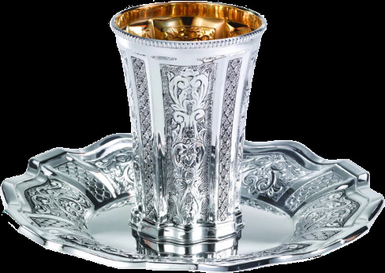

By Ephrayim Baskin | Pesach 5778 — April 2018
In yiddishkeit, wine is di-vine. Besides its significant use for libations in the Beis Hamikdosh, Chazal enacted that wine should be used in Birchas Hamazon, Bris Milah, Pidyon HaBen, Nisuin, Eirusin, Kiddush, Havdalah and of course during the Seder. Wine is also mentioned in relation to each of the Avos[1] and even Har Sinai is called a house of wine[2].
However, wine is also associated with several negative events (you wine some you lose some). The sins of Adam (according to R’ Meir), Noach, Lot’s daughters, Nadav and Avihu as well as B’nei Yisroel at Shittim were caused by wine. The Sotah and Ben Sorer U’morer are also partially wine driven. The midrash notes how wine also played a significant role in the exile of the 10 tribes and the destruction of the first Beis Hamikdosh[3]. In fact, the Midrash Tanchuma (shmini 8) states that Avodah zoro, Gilui arayos, Shfichas domim and Loshon horo are caused by wine.
Concordingly, wine is the most restrictive of all kosher food types.
From the time the grape is crushed (and lets out a little w(h)ine), only Jews can touch or process it until it is either sealed or degraded. The stringency associated with kosher wine production is quite peculiar and some consider it to be vintage and even unraisinable (at least that is what I heard through the grapevine). It is interesting to note that these kosher restrictions weren’t always in place. This article will wine back the clock and uncork the history of Jewish wining.
When the Torah was given, only wine that was poured as a libation to Avodah Zoro (idol-worship) was forbidden[4]. This wine, known as Yayin Nesach, was not only prohibited to drink (ossur b’shtiyah), but even to derive pleasure from (ossur bhano’ah). However, this prohibition did not extend to most wine on the market, as only a small percentage was used for libations to Avodah Zoro, and even then, such wine would unlikely be sold afterwards[5].
Unfortunately, due to some pour decisions of those who sinned at Shittim, extra rules on wine consumption were quickly enacted. After failing to curse the Jews, Bilaam advised Balak to use Moabite and Midianite women to seduce Jewish men into immorality[6]. They invented quite an elaborate plan of seduction:
In Egypt, there was an abundance of linen, and the Jews were thus accustomed to wearing linen garments[7]. After 40 years, the Jews were looking for some new garments. The Moabites set up market tents along the Jordan river, and the Jews who were camped close by would frequent there. An older lady would stand outside the tent and offer the garments at full price, but then a young harlot waiting inside would call the Jews in and offer discounted prices. Relishing the sale, the Jewish men would keep returning to these stalls. When the harlot felt that the relationship had developed, she would sit them down to choose any merchandise they wanted while offering refreshments of wine. The men would become intoxicated, whereupon the young harlot would make her advance and persuade the man to defecate in front of the idol (not knowing that this is how that idol was served) and thereby denounce Moshe and the Torah.
The rest of the tale we read in the Chumash. Hashem punished those who sinned by releasing a plague, only to be stopped when Pinchas zealously spears Zimri and the Midianite princess Cosbi. Afterwards, Chazal tell us that Pinchas enacted a ban on wine. Pirkei D’Rabbi Eliezer (47) describes how Pinchas used Hashem’s name and the writing on the Luchos to evoke the heavenly and earthly Beis Din to create a ban on drinking wine that was not produced by a Jew (known as Stam Yaynum). The actions of Pinchas made Israel grape again.
However, the work of Pinchas eventually ran out of juice, as wine played a significant role in the exile of the Jews from Israel. The midrash describes how wine caused the exile of the ten tribes[8], as well as the exile of the tribes of Yehuda and Binyomin[9], and the destruction of the Beis Hamikdosh[10].
During the grape depression of the Babylonian exile, Nebuchadnezzar deported Jewish nobles to be chamberlains in his court. He fed them food and wine. Amongst them was the prophet and accomplished scholar Daniel who resolved not to be defiled by the king’s food or wine[11]. Some commentators learn that this was a personal stringency that Daniel took upon himself[12]. However, many learn that Daniel, too, enacted a similar ban on non-Jewish wine.
There is quite a discussion regarding what exactly were the decrees of Pinchas and Daniel. There are a couple of opinions, so we must read between the wines:
1. The Ramban and others write that the concern of Pinchas was intermarriage, and consequently, only drinking the wine of a non-Jew was prohibited. However, one could still derive pleasure from such wine and could even drink wine of a non- observant Jew[13]. However, the decree wasn’t widely accepted, and after the Jews entered Canaan, the decree fell away. According to this approach, Daniel reinstated the decree of Pinchas.
2. The Rambam and others argue that the ban Pinchas introduced wasn’t rabbinic in nature, but in fact, it was the introduction of the Torah mitzvoh that prohibited Yayin Nesech[14]. According to this, the wine that the young harlots served the Jews at Shittim was Avodah Zoro wine, and there is a version of the Gemoro that supports this[15]. As such, Daniel was the first to introduce the prohibition on drinking the wine of a non-Jew which had not been used for Avodah Zoro.
Sadly, during the Babylonian exile, many Jews were not careful about this and other decrees, and many assimilated[16].
The decree on non-Jewish wine of Pinchas and/or Daniel was also limited in terms of where the drinking took place. Some say it only applied at the house of a non-Jew or at one of their parties[17]. Alternatively, it only applied in the cities, but not in the villages[18]. It was not until after the destruction of the second Beis HaMikdosh, where the Jewish people again faced the grape threat of assimilation, that a more restrictive and encompassing decree was issued.
The Mishnah (Shabbos 1:4) describes the great sage Chananyah ben Chizkiyah ben Guriyon who secluded himself in his attic to write a commentary on the book of Ezekiel. It was common for the sages to go up to his attic and visit him for advice. On one such occasion, a large group of the students of Hillel and Shammai gathered at Chanayah’s house, and the students of Beis Shammai, known to be more strict, outnumbered Beis Hillel. Eighteen measures were decreed on that day. The Gemoro[19] says that, on that day, they stuck a sword in the house of study and said whoever wants to enter may enter, however whoever wants to leave may not leave. The Yerushalmi also outlines similar aggressive measures to ensure the measures were fairly voted upon[20]. One of these decrees concerned food items, and included prohibiting the wine of non-Jews so as not to lead to promiscuity.
The enactments made on that day gained special significance in Jewish law[21], to the extent that the Yerushalmi notes these decrees cannot be revoked, unlike other decrees where a subsequent Beis Din with greater numbers and knowledge could rescind them.
However, here too, the content and scope of the decree is debated (because wine not?).
1. The Rashba[22] and others learn that the wine decree of the eighteen measures only prohibited the drinking of non-Jewish wine, but still allowed one to benefit from it. Shortly thereafter[23], Chazal saw that many people were becoming accustomed to offering their wine to Avodah Zoro, and hence introduced another decree to prohibit any benefit from non- Jewish wine, as if it was actually offered to Avodah Zoro. As such, the wine was not only prohibited to drink, but even to derive pleasure from.
2. Another interesting yet similar approach is that there was already a pre-existing decree prohibiting benefit from non-Jewish wine even before the eighteen measures were decreed, due to the concern that the wine had been offered to Avodah Zoro. However, this decree did not extend to scenarios where there was no chance of the wine having been offered to Avodah Zoro. The decree in the eighteen measures extended this ban to scenarios where there would be concerns of assimilation, even though there were no concerns of Avodah Zoro[24].
3. There was only one decree on wine (that of the eighteen measures). This decree forbade both drinking and benefiting from Stam Yaynum. The reason both drinking and benefit was banned was because Chazal decreed that Stam Yaynum should be considered as if it was Yayin Nesach[25]. Alternatively, if Chazal would not have forbidden deriving benefit from Stam Yaynum, people would confuse it with the prohibition of Yayin Nesech and think the latter was also permitted to derive benefit from[26].
The Jewish people have had an intertvined history with wine, and it is an area where numerous rabbinic decrees have been issued. In some scenarios, our ungrapeful actions have crushed us and beaten us to a pulp. To counter that, the laws of Chazal create a balance where we can harness the fruitful aspects of wine without us becoming sour grapes. As Jews in exile, we are always swimming against the currant, and adhering to our laws and traditions ensures our survival.
[1] Breishis 14:18, 27:25, rashi 45:23 – see the introduction of the Sefer Yayn Malchus 5777.
[2] Midrash Shir HaShirim 2:4
[3] See introduction to Sefer Yayn Malchus 5777
[4] Avodah Zoro 29b.
[5] Chidushei Ramban Avodah Zarah 36b.
[6] Sanhedrin 106a
[7] Maharsha Sanhedrin 106a. Linen grows abundantly in Egypt. See Isaiah 19:9 which mentions the flax workers of Egypt.
[8] Rashi Breishis 9:21; Amos 6:6-7; Shabbos 147b
[9] Isaiah 28:7.
[10] Vayikra Rabba 12.
[11] Daniel chapter 1.
[12] Ritva Avodah Zarah 36a
[13] Ramban (Avodah Zarah 36b) and Meiri (Avodah Zarah 29b). The Chassam Sofer (Yoreh Deah 123) proves this from the story in Chullin 4b where Yehoshafat drank the wine of Achav, as Achav was nonetheless Jewish. However, see Beis Yosef Yoreh Deah 123, who uses this story to show that the decree of Pinchas was not widely accepted.
[14] Thus, the possuk the Gemoro (Avodah Zarah 29b) uses to learn Yayin Nesech only appears in parshas Haazinu.
[15] Rambam Sefer Hamitzvos lavin 194.
[16] Smag on Sefer Mitzvos ibid.
[17] Beis Yosef Yoreh Deah 123.
[18] B’ir v’lo basadeh – Ramban Avodah Zarah 36a.
[19] Shabbos (Bavli) 17a.
[20] Chassam Sofer on Shabbos 17b.
[21] Especially those that were subsequently accepted by the majority of the Jewish nation (exception oil/bread).
[22] Toras Habayis HaAruch 5:1:39a.
[23] Before the time the Mishna was compiled.
[24] Shevili Dovid Yoreh Deah 123 based on Rambam and Rashi
[25] Tur Yoreh Deah 123.
[26] Ran Avodah Zarah 29.
Hopefully next article I write will have some better puns (a barrel of laughs?), but if not, feel free to call wine-one-one.
Originally published in Young Yeshivah Magazine. Republished with permission.